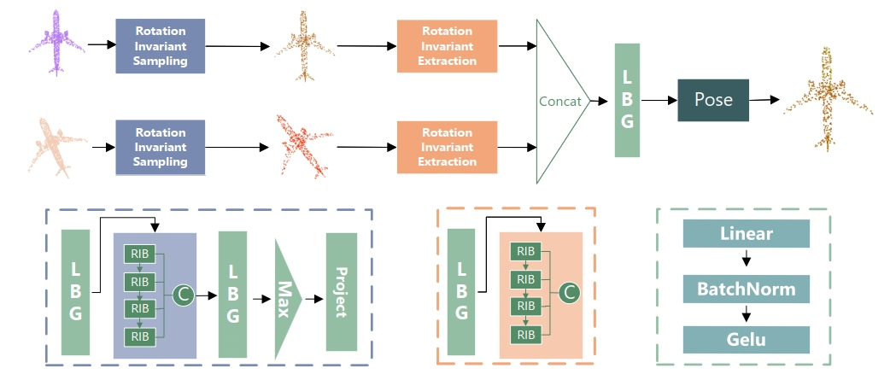
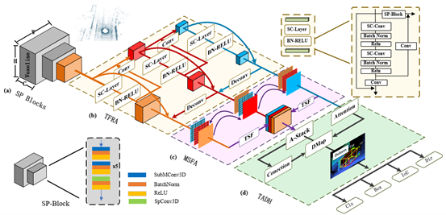

|
|
Xi'an Jiaotong University, China
M.S. in Electronic and Information Engineering • Aug. 2020 - Present
GPA: 3.65/4.0
Core Courses: Machine Learning Deep Learning
|
|
|
Xidian University, China
B.ENG. in Computer Science and Technology Outstanding student cadre • Sep. 2016 - Jun. 2020
GPA: 3.39/4.0
Core Courses: Analysis of Algorithms Operating System
|
|
|
Institute of Artificial Intelligence and Robotics(IAIR), Xi'an Jiaotong University
M.S. Dissertation Project & Research Associate • Sep. 2020 - Present
Advisors: Yuehu Liu and Yaochen Li
Point Cloud Registration with traditional methods and deep learning methods.
Multimodal Point Cloud Semantic Segmentation.
3D Object Detection in Road Scenes.
|
|
|
Ascend Ecological Development Department, Huawei
Research Assistant • Mar. 2022 - Jun. 2022
Transplant the deep learning model to Huawei Ascend AI processor for deployment.
Complete the compatibility and performance verification of both systems
Achieve the required accuracy and performance on the Ascend AI processor about EfficientPS and centroids-reid.
|
|
|
Design of power-on self-test module for humanoid robot NAO, Xidian University
Research Assistant • Jan. 2019 - Jun. 2019
Set up qualitative detection, detect tactile sensors, pressure sensors, audio systems, and other modules.
Study the underlying API of NAO and write code to control the trajectory of each joint of the robot.
|
|

|
RITNet: A Rotation Invariant Transformer based Network for Point Cloud Registration
Min Yang, Yaochen Li,Su Wang, Shaohan Yang, Yuehu Liu
Accepted by IEEE International Conference on Tools with Artificial Intelligence (ICTAI) , CCF-C CORE-B
Area: Point Cloud Registration, Transformer
Conventional point cloud registration methods usually
employ an encoder-decoder architecture, where mid-level
features are locally aggregated to extract geometric information.
However, the over-reliance on local features may raise the
boundary points cannot be adequately matched for two point
clouds. To address this issue, we argue that the boundary
features can be further enhanced by the rotation information, and
propose a rotation invariant representation to replace common
3D Cartesian coordinates as the network inputs that enhances
generalization to arbitrary orientations. Based on this technique,
we propose rotation invariant Transformer for point cloud registration,
which utilizes insensitivity to arrangement and quantity
of data in the Transformer module to capture global structural
knowledge within local parts for overall comprehension of each point clouds.
|
|

|
TADP: Task-Aware Deformable Prediction for Single-Stage 3D Object Detection
Su Wang, Min Yang
, Yaochen Li, Jiahao Nie, Rui Huang, Yuehu Liu
Submitted to IEEE International Conference on Robotics and Automation (ICRA), CCF-B CORE-B
Area: Point Cloud, Object Detection
We propose a new single-stage detector named Task-Aware Deformation for Single-Stage 3D Object Detection (TADD) which is applied to point cloud-based single-stage 3D object detection.
The main contribution of our method is to propose a an end-to-end but one-stage detector that includes a three-level feature refinement aggregation module (TFRA), multi-scale feature aggregation (MSFA).
|
Activity
Academic assistant, League branch secretary XJTU 2020 - 2021
Monitor, Vice Minister of student union of Computer College XDU ; 2016 - 2020
|
Teaching
SOFT300327 Data Structure Ⅲ01 XJTU 2021 - 2022
SOFT610111 Principles and Technology of Artificial Intelligence XJTU 2021 - 2022
|
Honor & Award
The first prize of University of Minnesota 3MT Competition 2022
National Outstanding Volunteer 2018
The third prize of the National College Students Mathematics Competition 2017
XDU Outstanding Student Cadre 2017 - 2019
|
|
This homepage was last updated: .
|
This awesome website template is borrowed from Jon Barron.
|
|